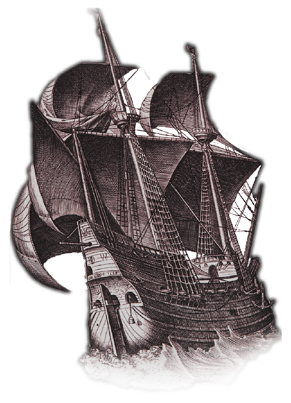

Experience The Voyage
Discover the voyage of the Red Dragon, a privateering vessel which rampaged through the Atlantic for thirteen months. Relive the journey told by the Pilot Thomas Hood of how they plundered, fought, and sailed for riches to bring back to England.
Discover the Archive
Discover the research that went into reconstructing the tale of the Red Dragon. Learn about the other ccounts of the story from those within and gainst the voyage.
Contributors
Researchers
Gabriel Rocha
Tommy Oliver
Mario Bummer
Ted Theo
Developers
Ben Rodia
Axel Mortimer
Stephen Gross
Su Hnin Pwint